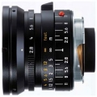

器材库 > 35mm画幅MF定焦镜头 > M 21/2.8 Elmarit ASPH.

详细规格
镜头类型
广角镜头
发布日期
未知
焦距
21mm
最大光圈
f/2.8
最小光圈
f/16
视角（对角）
92
镜头结构
9片/7组
最近对焦距离
70cm
滤镜口径
60mm
镜头卡口
Leica M
防抖
否
颜色
银色, 黑色
尺寸
58 x 46.5mm
重量
（黑/银）300/414g
冰8335652011-08-10 19:544.83 分
操作性 5.00耐用性 5.00性价比 4.00解像力 5.00色彩还原 5.00机械结构 5.00
law0072011-03-02 14:464.83 分
操作性 5.00耐用性 5.00性价比 4.00解像力 5.00色彩还原 5.00机械结构 5.00
law0072010-08-30 23:43
哈斯2008-11-24 12:424.83 分
操作性 5.00耐用性 5.00性价比 4.00解像力 5.00色彩还原 5.00机械结构 5.00
anpiue2006-11-29 11:334.67 分
操作性 5.00耐用性 5.00性价比 3.00解像力 5.00色彩还原 5.00机械结构 5.00
GLOOMSUNDAY2006-11-22 15:064.33 分
操作性 4.50耐用性 5.00性价比 3.50解像力 4.50色彩还原 4.00机械结构 4.50
好蓝2004-06-30 17:34
越野越酷2003-11-12 23:204.5 分
操作性 5.00耐用性 5.00性价比 2.00解像力 5.00色彩还原 5.00机械结构 5.00
Louis.Lam2003-10-22 08:584.25 分
操作性 4.00耐用性 5.00性价比 3.50解像力 4.00色彩还原 5.00机械结构 4.00
dxrc2003-04-23 07:364.58 分
操作性 4.50耐用性 5.00性价比 4.00解像力 4.50色彩还原 5.00机械结构 4.50
难得糊涂2002-11-26 14:164.92 分
操作性 5.00耐用性 5.00性价比 4.50解像力 5.00色彩还原 5.00机械结构 5.00
好蓝2002-11-26 03:264.83 分
操作性 5.00耐用性 5.00性价比 4.00解像力 5.00色彩还原 5.00机械结构 5.00
黑猪2002-10-13 03:015 分
操作性 5.00耐用性 5.00性价比 5.00解像力 5.00色彩还原 5.00机械结构 5.00
产品图 / 样片
徕卡 M 21/2.8 Elmarit ASPH
评测 / 相关文章
该产品暂无存档的评测文章